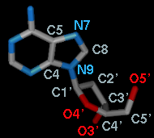

Build Structure can generate atomic structures
“from scratch” or modify existing molecules. See also:
addaa,
swapaa,
swapna,
AddH,
Rotamers,
Ramachandran Plot,
Metal Geometry,
Minimize Structure,
Unit Cell,
Multiscale
Models,
Change Chain IDs,
Renumber Residues,
Chimera interface to Modeller,
atom types,
modifying and saving data
There are several ways to start
Build Structure, a tool in the Structure Editing category.
Different sections are available from the menu near the top of the dialog:
- Start Structure
- add an atom, fragment, or molecule not bonded to existing atoms
- Modify Structure
- change or delete existing atoms,
build outward step-by-step from an existing structure
- Adjust Bonds
- add bonds, delete bonds, change bond lengths
- Adjust Torsions
- rotate bonds (change dihedral angles)
- Join Models
- bond and merge two models, moving one of them to form the appropriate bond
- Invert
- swap substituents, potentially changing chirality
- Adjust Bond Angles
- modify bond (valence) angles
Atomspec display style in the
Labels
preferences controls how atoms are listed
in the Build Structure dialog: in the simple style
(for example, HIS 16.A ND1, see also the
Distances
figure) or as
command-line
specifiers (for example, :16.A@ND1, see also the
Adjust Torsions figure).
Close dismisses the Build Structure tool; Help opens
this manual page in a browser window.
Outside of Build Structure,
atoms and bonds can also be deleted:
The Start Structure section of
Build Structure creates atoms, fragments,
and molecules independent of any pre-existing atoms.
See also:
open
(SMILES and
PubChem),
rna
Options are to Add:
- atom - a single atom; helium is used as a dummy type
not bonded to other atoms. Placement options:
- Center of view
- specified coordinates x, y and z
in the model coordinate system
Select placed atom indicates the new atom should be
selected.
The Modify Structure section can then be used
to specify the selected
atom's element, valence, and geometry, and to append further atoms.
- fragment - the specified fragment, placed in the center of view.
Several planar ring systems are available; a small diagram of the
chosen Fragment is displayed.
- SMILES string - a 3D structure for the specified
SMILES string. The structure is generated using the
SMILES
translator provided by the
National Cancer Institute
CADD group, or if that does not produce a structure, the
smi23d web service provided by the
cheminformatics group at Indiana University.
The smi23d service deploys the same procedure
as described for Pub3D in
Willighagen et al., BMC Bioinformatics
8:487 (2007).
Hydrogens are included, although it
may be necessary to add or
delete hydrogens
to generate the desired protonation state.
- PubChem CID - a modeled structure from
PubChem3D, specified by
PubChem
compound identifier (CID).
PubChem3D
includes most but not all PubChem Compound entries,
e.g., only the parent forms of salts, and subject to limits
on compound size, flexibility, and constituent atom types.
Hydrogens are included, although it
may be necessary to add or
delete hydrogens
to generate the desired protonation state.
For any of the options above, clicking Apply
will add the specified atom(s) and give them
the specified Residue name (normally three characters long in
PDB format).
- peptide - a peptide specified by
one-letter amino acid codes (capitalization does not matter)
Clicking Apply brings up another dialog for specifying backbone
φ (phi) and ψ (psi) angles and other parameters.
One or more rows can be chosen
with the mouse and Set to values either entered manually
or supplied for various types of secondary structure:
| description |
φ (°) | ψ (°) |
|---|
| α helix |
-57 | -47 |
| antiparallel β strand |
-139 | 135 |
| parallel β strand |
-119 | 113 |
| 310 helix |
-49 | -26 |
| π helix |
-57 | -70 |
Rows in the dialog can be chosen with the left mouse button.
Ctrl-click toggles the state (chosen or not) of single line.
A block can be chosen by dragging, or by
clicking on the first (or last) line in the desired block
and then Shift-clicking on its last (or first) line.
Sidechain conformations will be taken from the specified Rotamer library:
- Dunbrack 2010 - Dunbrack 2010 smooth backbone-dependent rotamer library
(5% stepdown; for chain-terminal residues,
the Dunbrack 2002 backbone-independent version is used instead)
- Dynameomics -
Dyameomics rotamer library
- Richardson (common-atom) - common-atom values (author-recommended)
from the Richardson backbone-independent rotamer library
- Richardson (mode) - mode values
from the Richardson backbone-independent rotamer library
The rotamer at each position will be chosen as described for the command
swapaa with the
criteria
cp: by fewest number of clashes, and if a tie, then the
highest probability according to the rotamer library. The residues are
added in N→C order, so only clashes with more N-terminal
residues are evaluated.
The peptide will be assigned the specified chain ID.
Clicking Apply (or OK, which also dismisses the dialog)
creates the peptide. Hydrogen atoms are not included.
Backbone bond lengths and angles are taken from the
Amber
ff99 parameters. Sidechain bond lengths and angles are taken from the
Amber
parameter files all*94.lib.
- helical DNA/RNA
- double-helical nucleic acid specified by
the one-letter residue codes of one strand (capitalization does not matter);
the complementary strand will also be built to generate a double helix.
Possible types:
- DNA (sequence containing A,T,G,C)
- RNA (sequence containing A,U,G,C)
- Hybrid DNA/RNA (enter DNA) (sequence containing A,T,G,C)
Possible conformations:
The geometries were derived by surveying known structures of double-helical
nucleic acids. The same torsion angle values are used for a conformation
regardless of the composition of the double helix (specific sequence and
whether DNA, RNA, or DNA/RNA hybrid).
- more RNA... simply refers users to
Assemble2,
a Chimera plugin for designing 2D RNA structures
and generating corresponding 3D structures.
Executables, source code, and documentation are available for
download.
Assemble2 is developed by Fabrice Jossinet
(Institut de Biologie Moléculaire et Cellulaire, Strasbourg).
The new atom, fragment, or molecule can be
colored by element
and placed in an existing molecule model
or a new model with a specified name.
A new model will be assigned the lowest available model number.
The Modify Structure section of
Build Structure can be used to change the element,
valence (number of directly attached atoms), and/or geometry
(spatial arrangement of attached atoms) of one or more
selected atoms;
hydrogens are appended as needed to fill the valence.
Building outward can be done by successive cycles
of modifying a hydrogen attached to the previously modified atom.
The Modify Structure dialog can be opened directly
by doubleclick-picking
an atom when 0 or >3 other atoms are already
selected, then choosing
Modify Atom from the resulting
context menu.
Clicking Apply will change the
selected atoms as specified:
- Element - desired element
- Bonds - desired total number of substituents on the atom
(0-4 allowed).
Hydrogens will be added to the atom to generate the indicated total
number of Bonds. Pre-existing atoms are not removed.
If the atom is already bonded to one (and only one) other atom, the bond
will be adjusted to an approximate length depending
on the elements involved.
The positions of any other atoms already present will not be changed.
New hydrogens will be placed to form the target
(idealized) bond angles, or if the atom already has two or more
substituents, to maximally avoid those substituents.
Bond lengths for X-H (X = C/N/O/S) are taken from the
Amber
parm99 parameters (see table).
Bond lengths can be adjusted to specific values using
Set Bond Length, or
allowed to change along with other degrees of freedom during
energy minimization.
-
Geometry - target arrangement of bonds around the atom
- linear - allowed for 2 bonds, target bond angle 180°
- trigonal - allowed for 2-3 bonds,
target bond angle(s) 120° in a plane
- tetrahedral - allowed for 2-4 bonds,
target bond angle(s) 109.5°
In PDB format,
atom names can be up to four characters long and should be unique
within a residue. An atom name normally starts with the element symbol.
If any element assignment would be changed, a new atom name
or sequentially numbered range of names must be specified.
When only atoms matching the specified element are
selected, however,
it is possible to retain their current names.
- Connect to pre-existing atoms if appropriate
- if a newly added hydrogen would be very close to
an existing atom in the same model as the
selected atom, discard
the hydrogen and form a bond to the existing atom instead
- Focus view on modified residue -
focus the view on the
the residue containing the modified atom
- Color new atoms by element - color the modified atom and any
newly added hydrogens
by element
- Residue Name
- Leave unchanged
- Change modified residue's name to [resname]
- change the residue name to resname
for all atoms in the residue, not just the modified atom
(appropriate when a standard residue is modified; for example,
a methylated lysine should no longer be named LYS)
- Put just changed atoms in new residue named [resname]
in chain [chainID]
- put the modified atom and any new hydrogens
in a new residue named resname in chain chainID;
otherwise, they will be included in the atom's current residue
In PDB format,
residue names are normally three characters long and chain identifiers a
single character (or blank).
However, Chimera will tolerate four-character residue names,
and the chain identifier can be specified as het or water
(in PDB output,
these translate to use of HETATM records with a blank chain identifier).
Otherwise, PDB output
will contain ATOM records for standard residues,
HETATM records for nonstandard residues,
and the specified chain identifier(s).
To build out further, select
one of the new hydrogens and use Modify Structure again.
Clicking Delete removes the
selected atoms and bonds.
The Adjust Bonds section of
Build Structure
allows adding bonds, deleting bonds, and changing bond lengths.
This dialog can be opened directly
by doubleclick-picking
a bond when no other bonds are already
selected, then choosing
Adjust Bond from the resulting
context menu.
Bonds can also be created and deleted with the command
bond,
and bond lengths changed with the command
adjust.
- Add/Delete
- Delete selected bonds - remove any bonds that are
selected
- Add [option] bonds between selected atoms - add bonds to a
selected set of atoms, where
the option can be:
- reasonable (default) -
bond each pair in the set for which the interatomic distance is no greater
than the sum of their covalent bond radii
plus a tolerance of 0.4 Å
- all possible - bond all pairs in the set, regardless of whether
the bonds are reasonable
- Set Length
- Set length of selected bonds to [length] - adjust the
lengths of the selected bonds
sequentially to length Å, moving atoms on the:
- smaller side (default)
- larger side
Entering a new value or moving the slider will change the length.
The order of bond adjustment may affect the final position of the
structure (but not the structure itself) and cannot be controlled.
If the bond is in a ring, only the flanking atoms will be moved,
by equal distances in opposite directions.
Clicking Revert restores the
selected bonds to their lengths
prior to selection. Once the selection has been changed, however,
the bonds can no longer be reverted, even if re-selected.
The Adjust Torsions section of
Build Structure
is a table of active (rotatable) torsions.
Active torsions are
saved in sessions.
See also: rotation
There are several ways to start
Adjust Torsions, a tool in the Structure Editing category.
Torsions can be activated in three ways:
- Selecting
exactly one bond, then clicking the Activate button on the dialog.
With default
mouse settings,
a bond can be picked
(selected from the graphics window) with Ctrl-click.
- Doubleclick-picking
a bond when no other bonds are already
selected, then choosing
Rotate Bond from the resulting
context menu.
- Using the
rotation command.
An error message will appear
if an attempt is made to activate a bond that is
within a ring or already rotatable.
If the four atoms defining a torsion are called 1-2-3-4,
1 is the Near atom and 4 is the Far atom,
which will move when the bond is rotated.
The angle in degrees as defined by the current Near and Far
atoms is shown in the Torsion column.
Torsion can be toggled to Delta;
the reported value is then
the angle in degrees relative to the starting angle,
and there are no Near and Far columns.
For a terminal bond (lacking additional atoms on one end), the value shown
is always a delta, even if the column header is toggled to Torsion.

A bond can be rotated by entering a new angle value (and pressing return),
clicking the arrowheads flanking the angle value,
or manipulating the dial. The Dial size can be set to
small, medium, or large. Further, torsions
can be manipulated in the graphics window with the mouse.
This can be done by checking
Rotate [torsion] using [button]
and choosing the desired torsion and mouse button from the pulldown menus.
The Bond column contains a pulldown menu for each active rotation,
labeled with identifiers for atoms 2->3 (those flanking the rotatable bond):
- Revert - restore the original torsion angle
- Reverse - change which side of the torsion moves when the bond
is rotated (change the torsion definition from A-B-C-D to D-C-B-A)
- Deactivate
- deactivate the bond rotation and remove it from the table.
Note that the torsion will not automatically revert to its original value when
deactivated; Revert should be used before Deactivate to retain
the original torsional angle. Even if the same rotation is reactivated later,
Revert will not work to restore the angle, since the original value
has not been saved.
- Select - select
the rotatable bond and deselect any others;
when in the Torsion mode, also
select the two flanking bonds if the rotatable bond is nonterminal
When atom 2 is bonded to more than two atoms, there is more than one
possible Near atom, and alternatives (if any) are available
in a pulldown menu from the current Near atom name. Likewise,
when atom 3 is bonded to more than two atoms, there is more than one
possible Far atom, and alternatives (if any) are available
in a pulldown menu from the current Far atom name.
For the first torsion in the example (figures above), there are two choices
for the Near atom, C8 and C4, and two choices for
the Far atom, O4' and C2'. For the second torsion,
there are two choices for the Near atom, O4' and C3',
and only one possible Far atom, O5'. Of course, if
Reverse is used, the Near and Far choices are
interchanged, and in the Delta mode,
there are no Near and Far columns.
The Labels setting applies to all active torsions
and can be switched among:
- None - no label
- ID - torsion ID number (the first column in the listing)
- Name - identifiers for atoms 2->3
(as shown in the Bond column)
- Angle - the angle in degrees
The places and Show degree symbol settings
control how angle values are displayed
when Labels is set to Angle.
The Decimal places can be changed by clicking the arrowheads
flanking the value.
The Join Models section of Build Structure
forms a bond between two selected
atoms. The two atoms must be in two different models, which will be merged
into a single model when the bond is formed.
See also: combine
- C-N peptide bond
- specialized case of joining two peptides. The N-terminal N of one
peptide and the C-terminal (carbonyl or carboxyl) C of the other
should be selected.
Each selected atom must be bonded to only one carbon
(except N in proline or hydroxyproline can be bonded to two carbons);
however, it may also be bonded to hydrogen and/or OXT, and if so,
these atoms will be replaced as appropriate by the new peptide bond.
- C-N length (default 1.33 Å)
- Cα-C-N-Cα dihedral (ω angle)
(default 180.0°)
- C-N-Cα-C dihedral (φ angle)
(default –120.0°)
The existing ψ angle (N-Cα-C-N dihedral)
of the same residue is simply reported; it can be changed as needed using
Adjust Torsions.
- Move atoms on [ selected N atom / selected C atom ] side
- which of the two models to reposition when forming the bond
- other bond - the more general case.
One terminal atom (only bonded to one other atom) in each model must first be
selected. These two atoms
will be removed and replaced with the new bond. Usually these atoms will be
hydrogens, so it may be useful to add hydrogens beforehand,
to whole models with AddH or
in a more local fashion with the
Modify Structure section of
Build Structure.
- length - length for the new bond in Å
- [menu of available dihedrals] dihedral
- torsion angle in degrees for the four atoms in the
dihedral chosen from the menu of possibilities
- Move atoms on [model #] side - which of the
two models to reposition when forming the bond
Clicking Apply replaces the two
selected
atoms with a bond and merges the models as specified.
The moved model will cease to exist as its atoms are merged
into the other model.
Chain identifiers and residue numbers may also be adjusted, in two phases.
First, the two models are merged, and chain identifiers in the incoming (moving)
model will be changed as needed to avoid duplication. Next,
when the bond is formed, if only one side has a chain ID
(excluding het),
it will also be assigned to the other side, or if both already have an
ID, the ID of the nonmoving side will be used for both.
The chain whose ID changes will be renumbered as needed
to avoid duplicate residue identifiers.
The Invert section of Build Structure
allows exchanging the positions of two substituents of an atom,
potentially inverting a chiral center.
Substituents of atoms that are not chiral centers can also be swapped.
See also: invert,
chirality
- If a single atom is selected,
clicking Swap exchanges the positions of its two smallest substituents
based on number of atoms, or if those are the same, atomic weights of
the atoms directly bonded to the selected atom.
Implicit hydrogens on the selected atom are considered, but not those
on its substituents.
These rules are not meant to reproduce the much more complex
“priority” calculations used in chirality determination.
- If two atoms directly bonded to the same central atom are
selected,
clicking Swap will exchange the positions of the substituents
rooted at those atoms.
Any unintended results can be reversed by clicking Swap again
without changing the selection.
The Adjust Bond Angles section of
Build Structure allows changing bond (valence)
angles. Bond angles can also be changed with the command
adjust.
First, two adjacent bonds defining an angle to be modified
must be selected.
The movement will be in the plane defined by the two selected bonds, and the
Move [bond] side menu controls which set of atoms will move.
While the selection exists, the bond angle can be modified by
entering a new angle value (and pressing return),
clicking the arrowheads flanking the value, or manipulating the dial.
Revert restores the most recently changed bond angle
to its original value, or if the moving side was switched after
the angle was changed, the value at the time the moving side was switched.
To preserve the ability to restore the original value, Revert
to the original value before switching the side that moves.
UCSF Computer Graphics Laboratory / May 2018